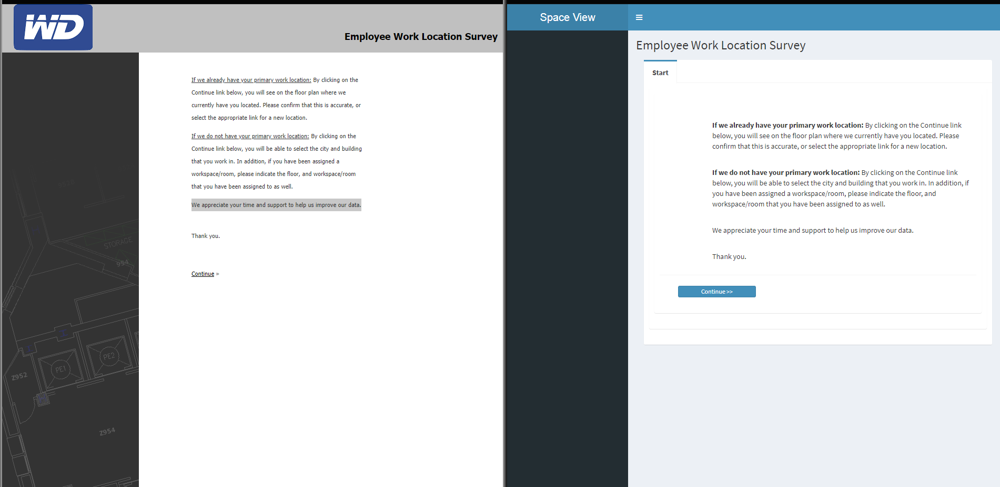

Bootstrap Front-End framework examples
{ Data Table, side bar, room selector }

{ Modal with highlight picker }

{ Date Range Picker }

{ Upgrading old web page to Bootstrap }
Here is some of my CAD/CAFM work
{ AutoCAD Polylining example 1 }

{ AutoCAD Polylining example 2 }

{ Revit Basic Home Model 1 }

{ Revit Basic Home Model 2 }